Рейс по
расписанию
Выполнение расписания, регулярность движения, отмены и сходы с причинами.
План и факт рейсов · отклонения · события диспетчера
bus:vision объединяет расписания, диспетчеризацию и аналитику, чтобы управлять надёжностью и доступностью перевозок для жителей.
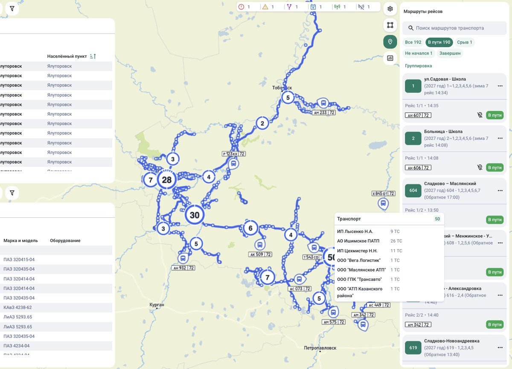
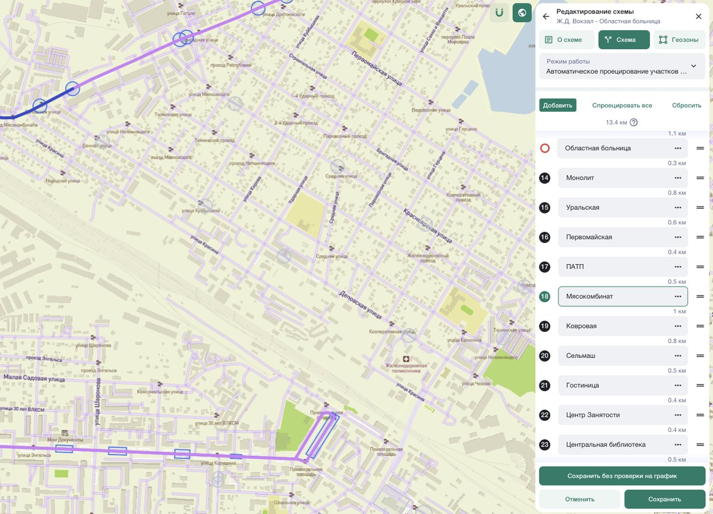
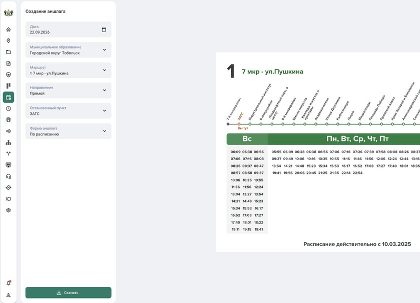
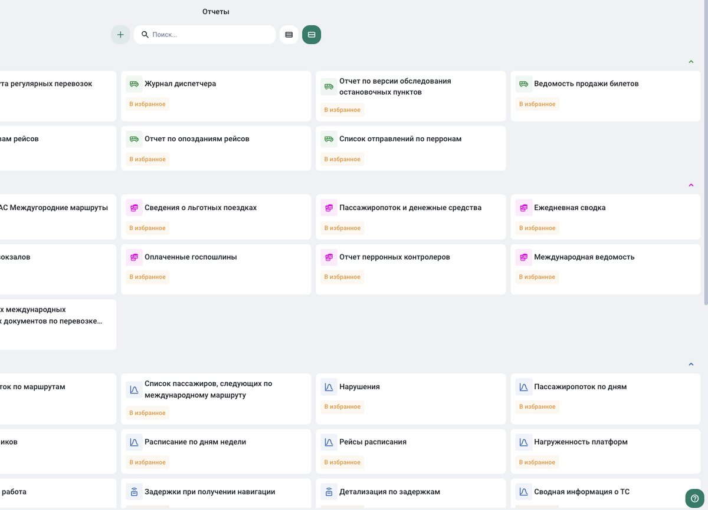
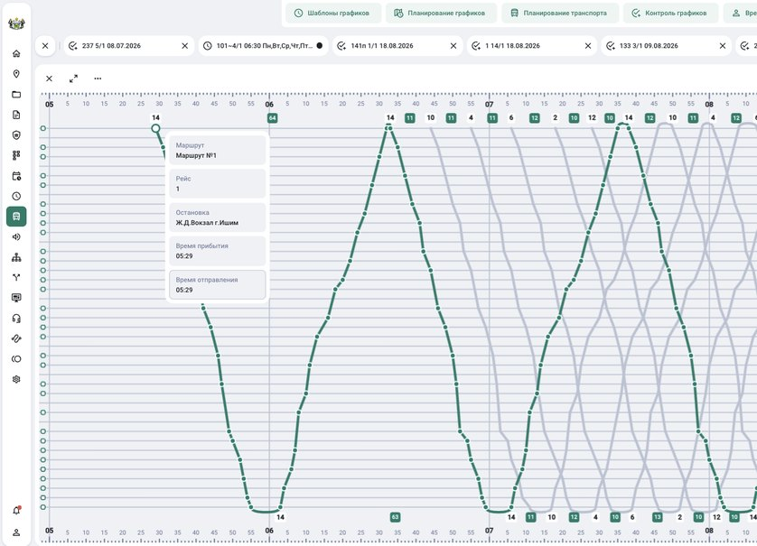
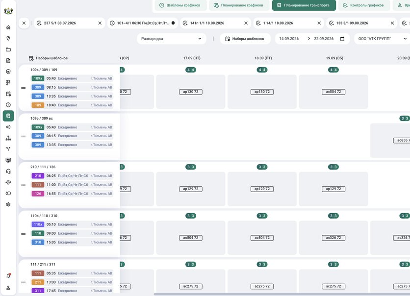
Диспетчерская карта и объектыОценивайте обслуживание глазами пассажира: состоится ли рейс, удобно ли добраться до остановки, сколько займёт дорога и во сколько обойдётся поездка.
Выполнение расписания, регулярность движения, отмены и сходы с причинами.
План и факт рейсов · отклонения · события диспетчера
Пешеходная доступность, охват жителей, связь с социальными объектами и пересадочными узлами.
Остановки · пешеходные подходы · маршрутная сеть
Время ожидания и в пути, скорость сообщения, количество и удобство пересадок.
Прибытия · интервалы · графики · пассажиропоток
Тарифы, проездные и льготы с учётом частоты поездок и расходов разных групп пассажиров.
Тарифные правила · льготы · типовые поездки · доходы
Показатели связываются с источником, периодом и полнотой данных. Правила сводной оценки настраиваются по согласованной методике; состав показателей и целевые значения определяются для региона.
bus:vision связывает показатели с рабочими инструментами. Команда видит отклонение, разбирает причину и контролирует результат решения.
Расписание, трек и события диспетчера показывают, где возникло отклонение. Отсутствие трека требует проверки.
Диспетчер уточняет: неисправность, нехватка водителя или дорожная задержка. Выбирает доступный резерв.
Заказчик контролирует фактический выпуск и повторяемость срывов по маршруту и перевозчику.
Управляемый процесс: от сигнала о срыве — до подтверждённого восстановления обслуживания.
Сценарии показывают логику работы с системой. Данные конкретного региона подключаются при внедрении.
Приоритеты развития сети и прозрачная оценка работы перевозчиков.
Отклонения, причины и инструменты восстановления обслуживания.
Согласованные расписания, выпуск и контроль обязательств.
Единое окно для работы с маршрутной сетью, графиками, планированием и онлайн-контролем перевозок.
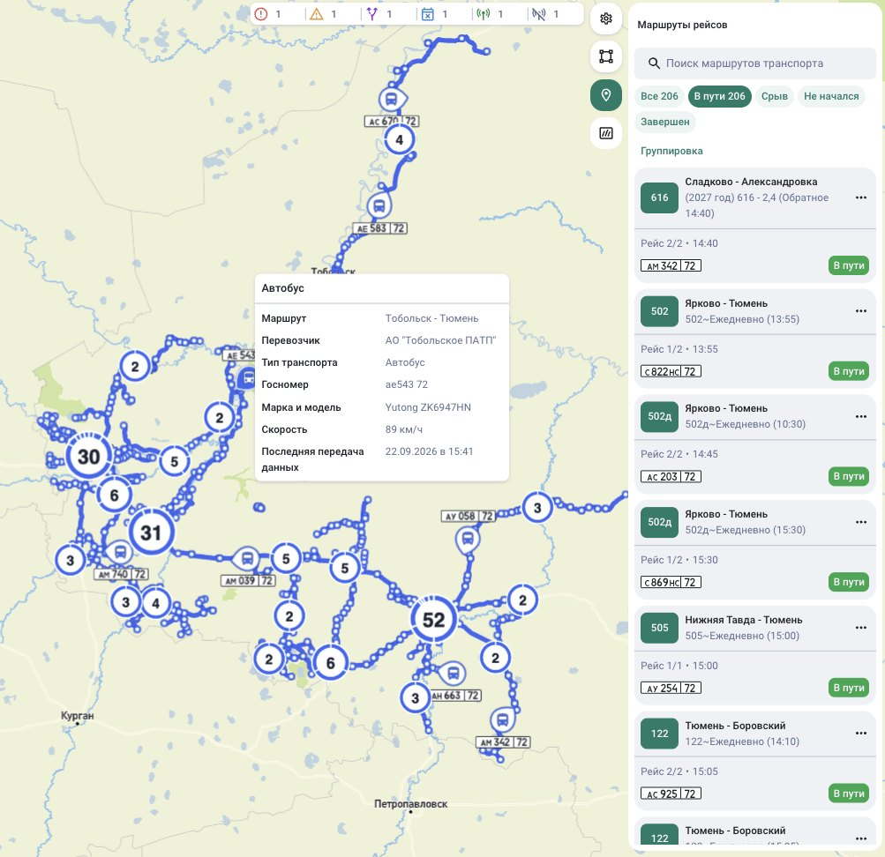
Карта маршрутов и рейсыВременная доступность. Согласованные интервалы и пересадки помогают сократить потери времени и сделать поездку предсказуемой.
Сформированные графики движения проверяются на соответствие нормам труда и отдыха водителей.
Если не пройдена одна или несколько проверок — система формирует уведомление.
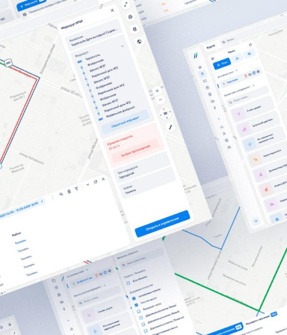
Конструктор графиковАвтоматическая генерация оптимальных расписаний по желаемым интервалам в течение суток или по желаемому количеству транспортных средств на маршруте.
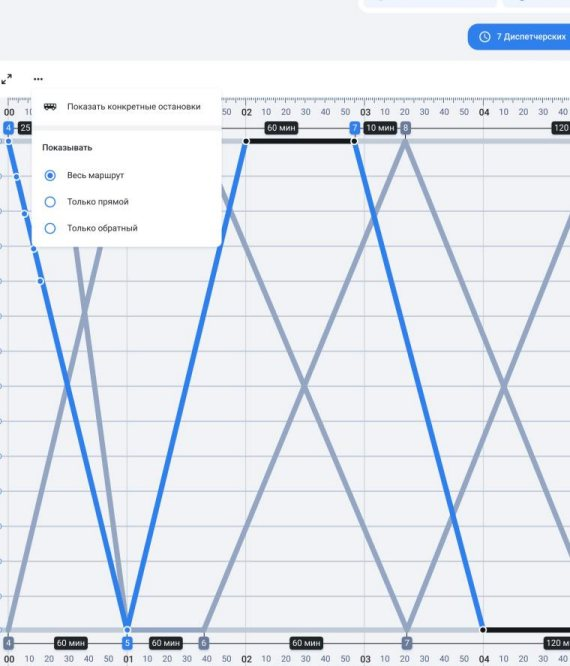
Мастер расписанийНадёжность обслуживания. План выпуска связывает расписание с доступным транспортом и требованиями к его работе.
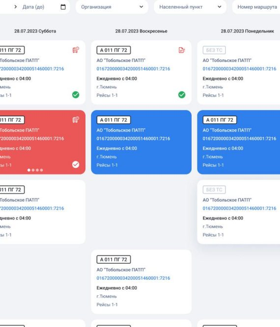
Календарь планированияНадёжность каждого рейса. План, фактическое движение и события собраны в рабочем пространстве диспетчера.
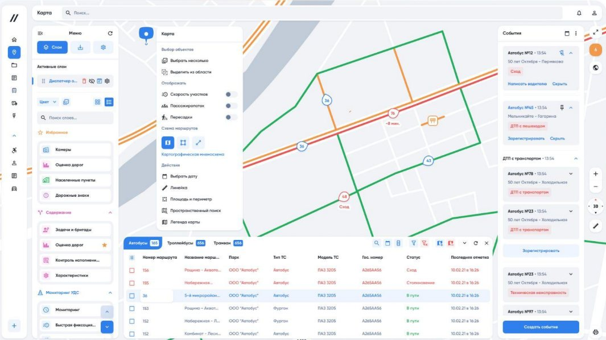
Рабочее место диспетчера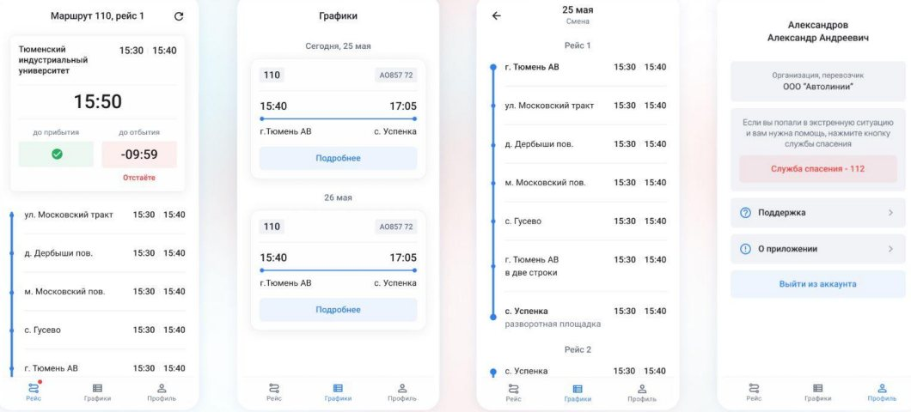
Приложение водителяОбязательства и факт. Маршрут, условия контракта и выполненная транспортная работа сопоставляются в одной системе.
Для органов власти, осуществляющих функции по организации регулярных перевозок, реализована возможность самостоятельного создания заявления в случае ввода в эксплуатацию построенных и (или) реконструированных автомобильных дорог общего пользования, на которых расположены остановочные пункты.
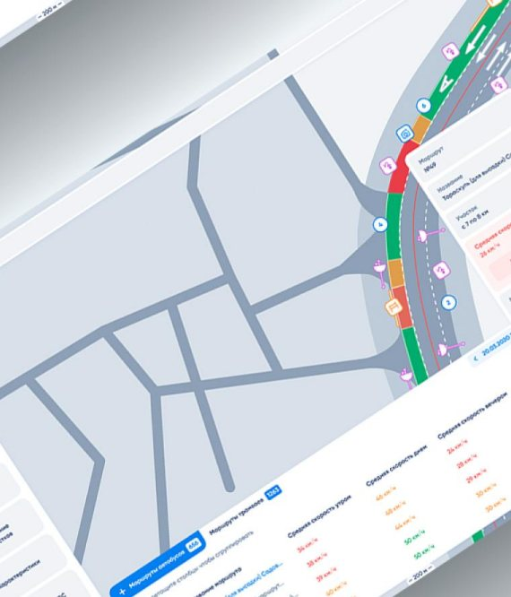
Схема маршрута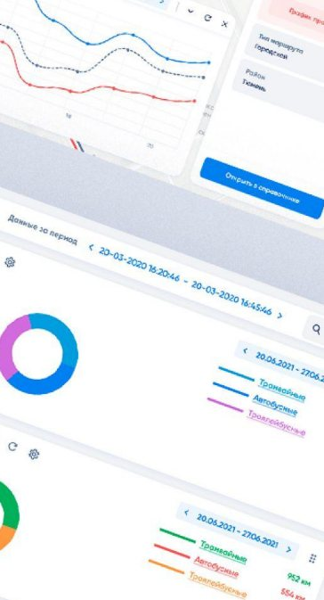
Аналитика исполненияДоступность для разных пассажиров. Условия поездки, оснащение транспорта и пересадки дополняют оценку качества обслуживания.
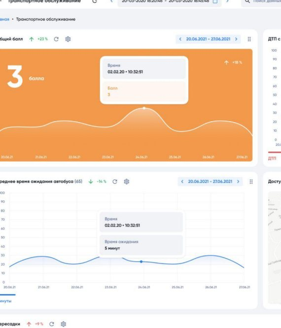
Оценка обслуживания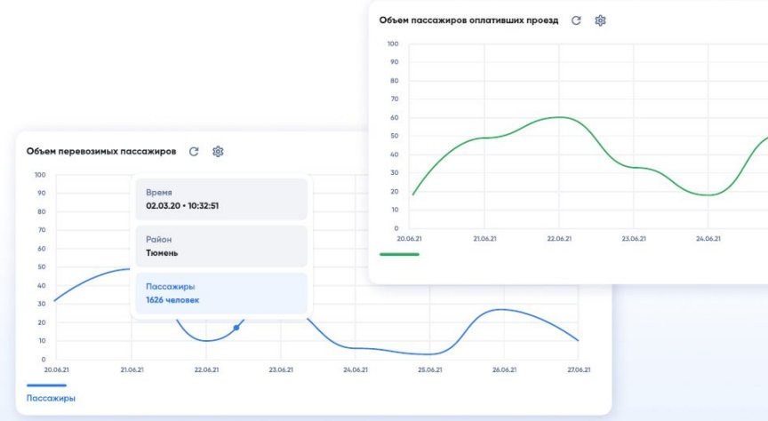
Объемы перевозокТерриториальная доступность. Анализ сети показывает, какие территории обслуживаются, где нужен подвоз и какие маршруты требуют внимания.
Рейтинг представлен в виде таблицы с возможностью просмотра детальной информации и настройки отображения данных по району, критерию, маршруту и другим качественным и количественным показателям.
Сервис забирает из брокера сообщений пакеты с данными и рассчитывает отрезки, где транспортное средство находилось в движении: продолжительность, пробег, нарушения скоростных режимов, стоянки и адрес ближайшего дома к месту стоянки.
Продажа, возврат и контроль билетов — от касс автовокзалов до систем-агрегаторов.
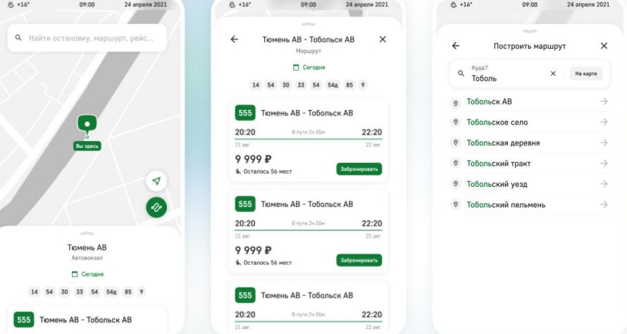
Операционные результаты связываются с качеством поездки: регулярностью, временем ожидания и исполнением обязательств.
Показатели приведены по материалам ИТС. Результат конкретного внедрения зависит от исходных условий, состава модулей и полноты данных.
Покажем рабочие сценарии, согласуем показатели и источники данных.
Единый open source стек для backend-сервисов, веб-интерфейса и мобильных приложений водителей и пассажиров.
Создано на базе ПО «Интеллектуальная Транспортная Система (ИТС)» — свидетельство о государственной регистрации программы для ЭВМ № 2014617300 от 16.07.2014
Победитель конкурса в номинации «Транспорт». Лучшая практика по внедрению интеллектуальных транспортных систем
Победитель конкурса «Проект года» в номинации «Лучший ИТ-проект Уральского федерального округа», Москва
Победитель в номинации «Лучшее решение для умного города» в рамках Национальной премии ИТ-решений
Финалист всероссийского акселератора ФАУ «РОСДОРНИИ», Москва
2 место в номинации «Инновационные технологии» — повышающие эффективность производств и улучшающие качество жизни человека. Тюменская область
Начнём с вашей задачи: регулярность, доступность, ожидание или тарифы. Покажем сценарий работы и определим данные для внедрения.
Управление движением общественного транспорта